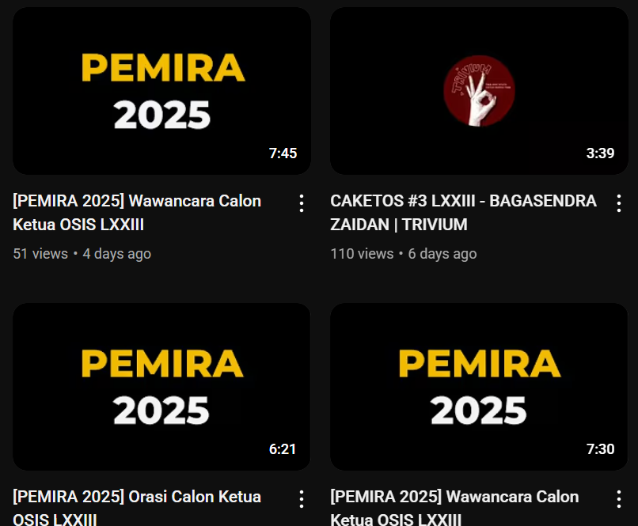

Pemilihan Ketua OSIS 2025
Kepengurusan Organisasi Siswa Intra Sekolah (OSIS) berubah setiap tahun. Untuk itu, pemilihan ketua OSIS dapat digelar pengurus OSIS tahun akademik sebelumnya dengan dihadiri siswa, guru, pembina OSIS, wakil kepala sekolah bidang kesiswaan, dan kepala sekolah.
Pada masa pemilihan ketua OSIS, para siswa belajar menggunakan hak pilih secara langsung, umum, bebas, dan rahasia. Pemilihan ketua OSIS juga mengajarkan praktik pemilihan yang jujur. Karena itu, pemilihan ketua OSIS juga menjadi bentuk praktik demokrasi di sekolah.
Ada beberapa calon ketua OSIS, antara lain: Catrine, Bagasendra, dan Nashwa.
Diposting: 6 Oktober 2025